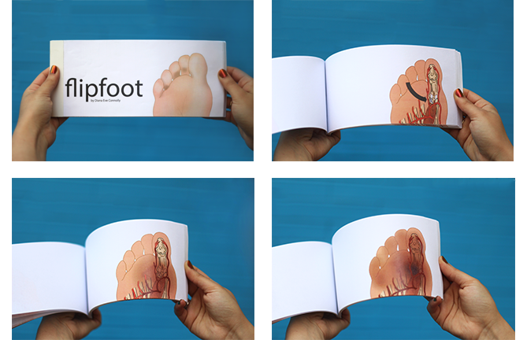

Senior Review

BHA Art and Cognitive Neuroscience
Class of 2017
- CV
Contact Information:
(650)776-2444
dianaconnolly@cmu.edu
5537 Beeler Street
Pittsburgh, PA 15213
Permanent Address:
801 Curtis Street
Menlo Park, CA 94025
Artist Statement
I study cognitive neuroscience and art, and am passionate about the connection between these two disciplines. My interest in cognition and perception is reflected in my artistic work, exploring topics such as the process of elusive thoughts in a dream, or the boundary between perceiving something as beautiful verses grotesque. My interest in cognitive neuroscience is applied in my current work as a Graphic Artist Intern at Tobii Dynavox, where I create Picture Communication Symbols, which are visual icons used to replace or supplement verbal communication for users with neurological disorders that impair their communication abilities. With my studying neuroscience, I am knowledgeable about the neurological disorders at hand, as well as inspired to create visuals that might help those suffering from these disorders.
My combined interests in cognitive neuroscience and art always have me wondering about how I can use art as a means of accessing and exploring human thought. And thus, while my art is often informed by my studies in cognitive neuroscience, my art also aims to answer questions in cognitive neuroscience.
My professional and artistic goal, now, is to explore illustration and the ways in which it can help to communicate.
Professional Goals
For the two years following graduation, I plan to explore job options. Given my recent experiences, I have fallen in love with illustration work and expect this to be the area that I go into. However, I am still open to other job options that might come along my way.
I am currently searching for steady illustrator or graphic artist positions, which are proving to be hard to come by, as many individuals working in these areas tend to do freelance. Tobii Dynavox, the company where I am currently a graphic artist intern, sadly will not have a full time position opening by the time that I graduate, but the graphics team is trying to see if there is a way they can keep me on as an “intern” still after graduation. The logistics for this are not figured out yet, but I would love to continue on as an illustrator at Tobii Dynavox. It really is a dream job for me, in that it incorporates both of my passions: the psychology and neuroscience aspects come in to play when planning graphics for individuals with certain neurological disorders, and the art aspects are always at play when creating the illustrations themselves.
Any job in which I am exploring some form of my two disciplines would make me extremely happy, especially if that happened to be using art to explore or communicate topics related to my academic studies.
Earlier Works
The below pieces are a selection of three projects from my last couple of years at Carnegie Mellon to exemplify my progression in topics in my art pieces. Since the beginning of my artistic studies here in college, I have been intrigued by how people perceive the things in front of them, and have used my art as a medium to explore ways to make people perceive. Below are a few examples that show my experiments with this.
Dream Box (2014)
Dream Box is a light-based sculptural piece that I created to represent the feeling of a dream - specifically the sensation of having elusive and sporadic thoughts, similar to the random fluctuation in the flashing lights' pattern. The eye-level face-like sculpture, with a sense of sterility from the lab gloves and haziness supplied by the transparent bubble wrap, works to add a lively yet inanimate quality.
Broached Brooch Beauty (2015)
Broached Brooch Beauty is a clay and jewel sculptural piece that I made exploring the concept behind beauty verses disgust. Specifically, I was intrigued by the point at which something typically perceived as gross, like a spider, becomes perceived as beautiful. I was inspired by Elizabethan brooches, which typically featured spiders as statement jewelry pieces.
Flipfoot (2015)
Flipfoot is a flipbook I made as a teaching tool for Complex Regional Pain Syndrome (CRPS). I broke a bone in my big toe last year that resulted in my developing CRPS, characterized by amplified pain, swelling, and changes to the skin of the affected area. My toes hurt, turned blue, red or black, and felt cold or hot - all not to be expected for just a small fracture. I felt the need for there to be an explanation of the development and progression of CRPS after an injury, and thus used illustration to do so.
Current Works
The below images were created for my work as a Graphic Artist Intern at Tobii Dynavox, a company that produces communication devices for those who have impaired verbal communication (think Stephen Hawking). I produce graphics to be shown on these devices, creating symbols used for communication as well as illustrating children's books. Please note that each project requires a different style than the others.
Picture Communication Symbols
Thin-line Symbols


{kind=link}
{kind=link}
{kind=link}
{kind=link}
{kind=link}
{kind=link}
{kind=link}
{kind=link}
{kind=link}
{kind=link}
{kind=link}
{kind=link}
{kind=link}
{kind=link}
{kind=link}
{kind=link}
{kind=link}
{kind=link}
{kind=link}
{kind=link}